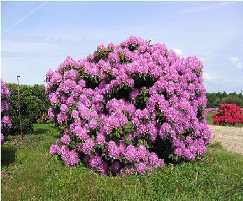
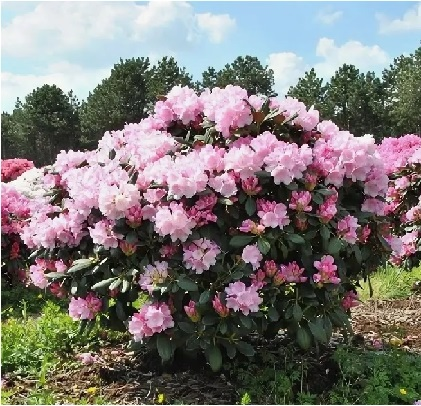
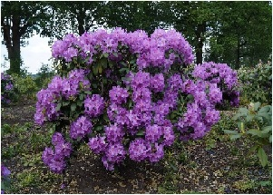

АЛЬПИЙСКАЯ РОЗА
Рододендроны могут быть кустарниками, крохотными деревцами и огромными деревьями. Корни растения стелются на небольшой глубине вдоль поверхности. Разные виды могут иметь листья самой разнообразной формы и размеров. Если на юге ареала листья многолетние, то к северу они сменяются на двух- и однолетние. Их размеры варьируют от одного до 50 см! Растение содержит большое количество дубильных веществ.
ОТ КАВКАЗА ДО КУРИЛ
Рододендроны — типичные жители Северного полушария, где предпочитают умеренный и субтропический климат. Больше всего видов насчитывается в Гималаях, южных провинциях Китая, Японии и странах Юго-Восточной Азии. В Южном полушарии растение тоже встречается, но крайне редко. Кустарник с пурпурными цветами можно, например, встретить в Новой Гвинее и некоторых областях Австралии. В России эти растения произрастают на Кавказе, Сибири и Дальнем Востоке. Культурные сорта кустарника можно увидеть и в других регионах страны.
ЭТАЛОН РАЗНООБРАЗИЯ
Род Рододендрон, входящий в семейство Вересковых, насчитывает более 600 видов! Они настолько разнообразны, что не поддаются единому описанию. В России представлено 18 видов, которые условно делятся на дальневосточные и кавказские. На Дальнем Востоке произрастает 11 видов и две формы растения, на Кавказе насчитывается три вида.